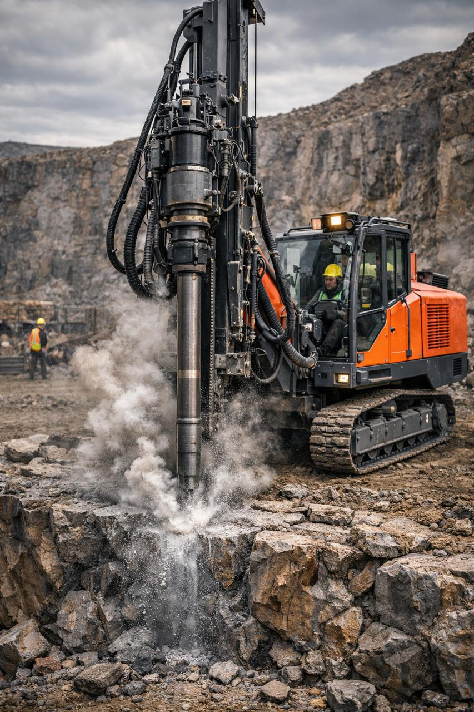
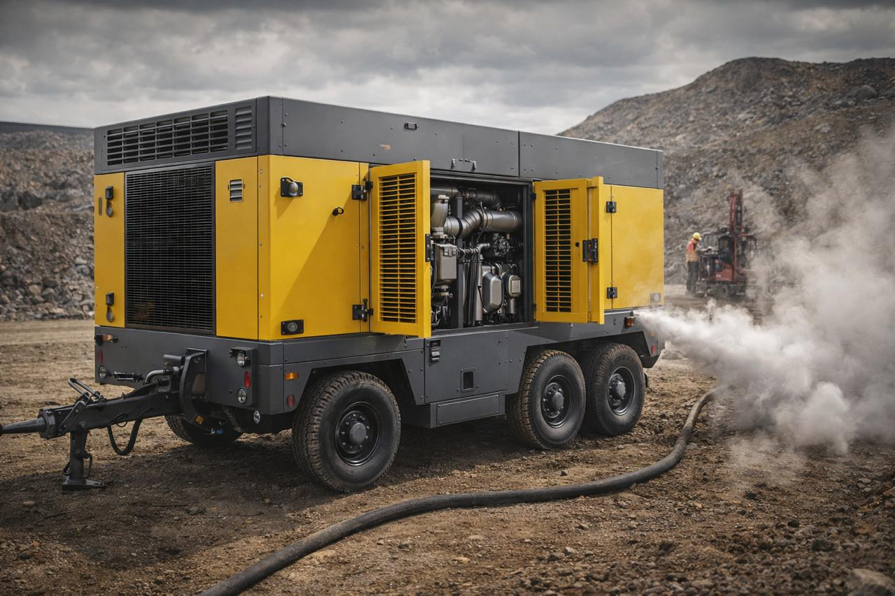
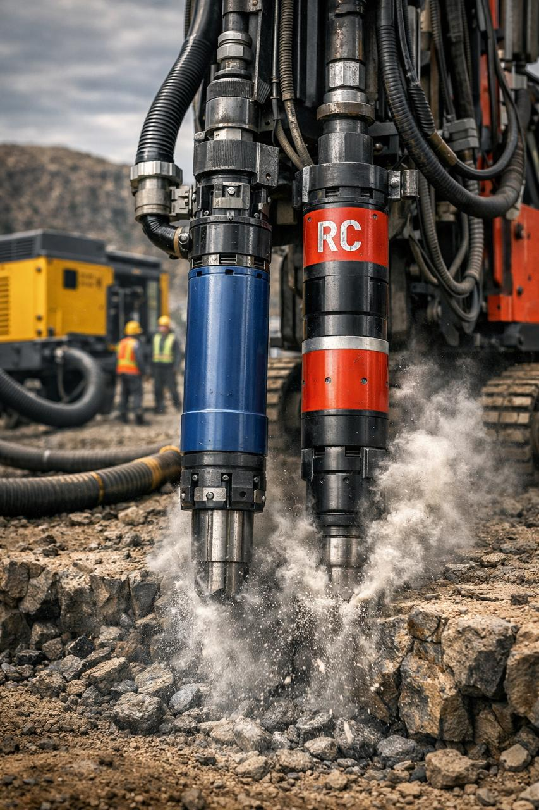
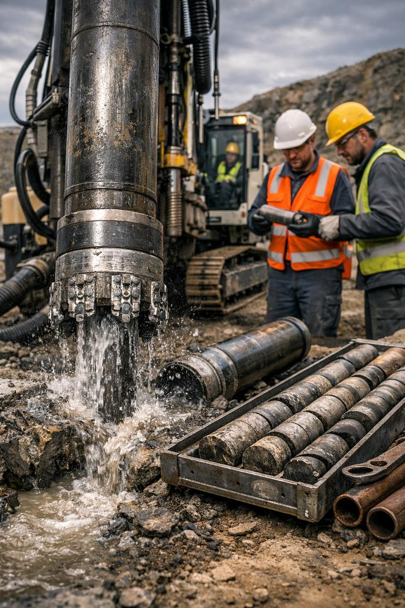
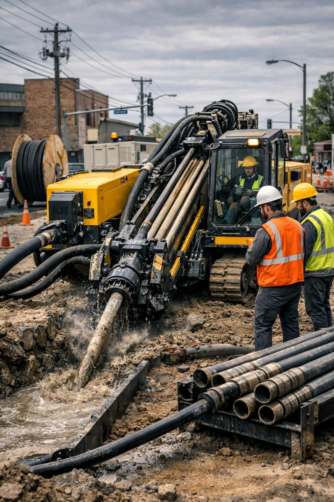
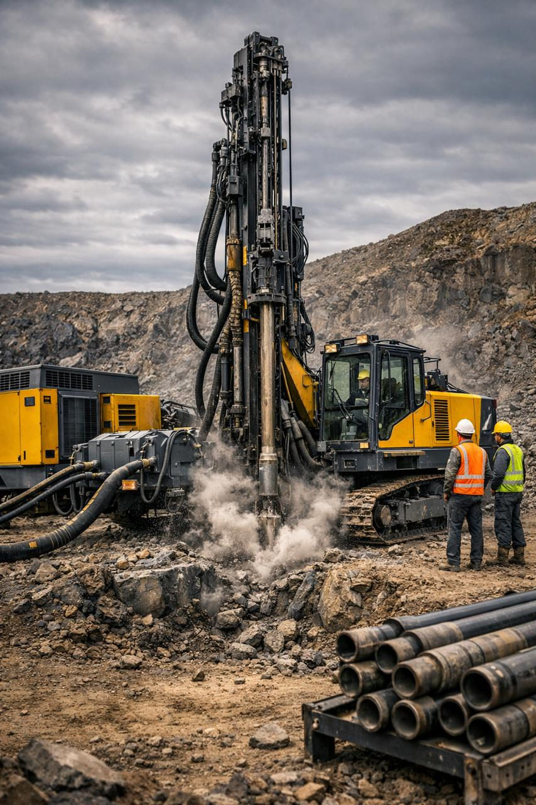
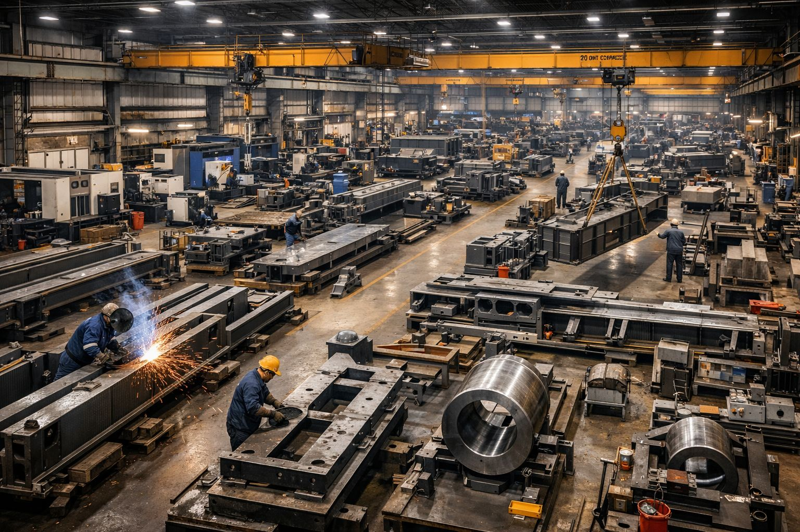

Drilling Solutions Built for Uptime
Delivering reliable, high-performance drilling equipment and consumables tailored for heavy civil, mining, and quarrying projects — from surface and foundation drilling to exploration and production.

A complete drilling portfolio, engineered for the ground you're in
Full Portfolio
- Compressors, hammers, drill rigs, bits, pipes, fluids, casings, and specialty tools
Applications
- Rock excavation, blast hole drilling, foundation piling, geotechnical investigation, horizontal directional drilling, and reverse circulation sampling
Performance Focus
- Uptime, penetration rates, tool life, and ease of maintenance
Equipment matched to your ground conditions

High-pressure power for pneumatic tools
Rugged compressors for powering pneumatic hammers and site tools; optimized for continuous operation and fuel efficiency.
Fast penetration in medium to hard rock
Ideal for surface drilling and bench operations; delivers fast penetration in medium to hard rock with low maintenance.

Deep, accurate holes on demand
Down-the-hole and reverse circulation hammers for deep, accurate holes; suited for exploration, blast holes, and water well drilling.

Clean sample recovery, high-rate drilling
Designed for clean sample recovery and high-rate drilling in mineral exploration and quarry sampling.
Engineered for torsional strength
Heavy-duty drill rods, couplings, and adapters engineered for torsional strength and long fatigue life.
Control cuttings, reduce wear
Specialized fluids and lubricants to control cuttings, reduce wear, and improve bit performance in varied ground conditions.
Versatile bits for mixed formations
Versatile bits for rotary drilling in mixed formations; available in multiple tooth and bearing configurations.

Tooling for deep foundations
CFA, bored pile, and micropile tooling for deep foundations and structural support works.

Modular rigs for rapid setup
Mobile and stationary rigs for surface, foundation, and exploration drilling; modular designs for easy transport and rapid setup.

Minimize downtime, extend service life
OEM and aftermarket components to minimize downtime and extend rig service intervals.
Precise investigation, high-quality recovery
Core barrels, diamond bits, and sampling tools for precise geotechnical investigation and high-quality core recovery.
Durable groundwater and dewatering solutions
Durable casings and screens for groundwater monitoring, dewatering, and borehole stabilization.
Trenchless installation, minimal surface disruption
Equipment and tooling for trenchless installations of utilities and pipelines with minimal surface disruption.
Matched to construction, mining, and quarrying
Construction
- Foundation piling, soil investigation, utility installation, and rock anchoring using foundation drilling products, rigs, and casing systems
Mining
- Blast hole drilling, exploration sampling, and production drilling with DTH/RC hammers, tricone bits, and heavy-duty drill pipes
Quarrying
- Bench drilling, fragmentation optimization, and sampling using top hammer systems, compressors, and specialized bits
Why operators choose our drilling equipment
Increased Productivity
- Faster penetration rates and optimized tool selection reduce cycle times
Lower Operating Costs
- Long-life consumables and reliable spare parts cut replacement frequency
Improved Safety
- Robust equipment design and proper tooling reduce failure modes and on-site hazards
Versatility
- Modular rigs and a broad tooling range let you adapt quickly to changing ground conditions
Technical Support
- Application engineering, on-site troubleshooting, and parts availability to keep projects on schedule
Matching the right solution to your project
-
Match tool to formation
Use DTH/RC for hard rock, tricone for mixed formations, and HDD for trenchless utility work.
-
Consider sample quality
Choose reverse circulation systems for clean, representative samples.
-
Prioritize uptime
Select rigs and compressors with proven service networks and readily available spare parts.
-
Optimize fluids and lubrication
Tailor fluids to cuttings control and bit cooling to extend tool life.